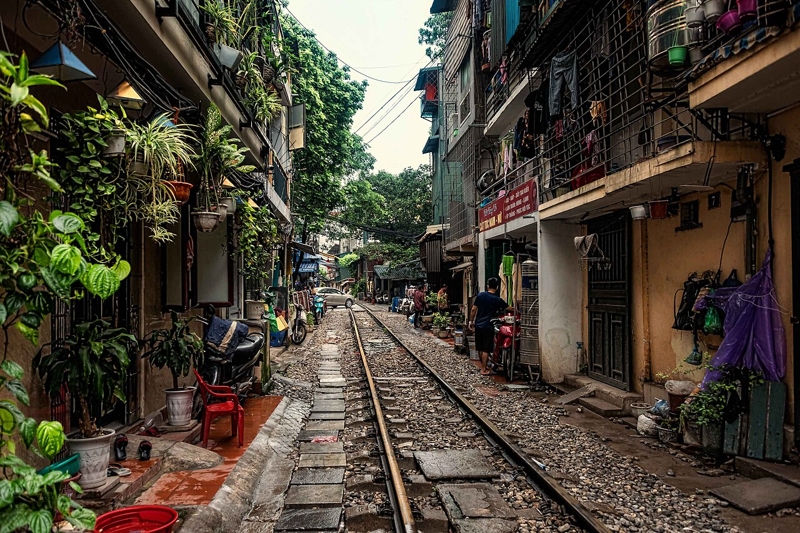
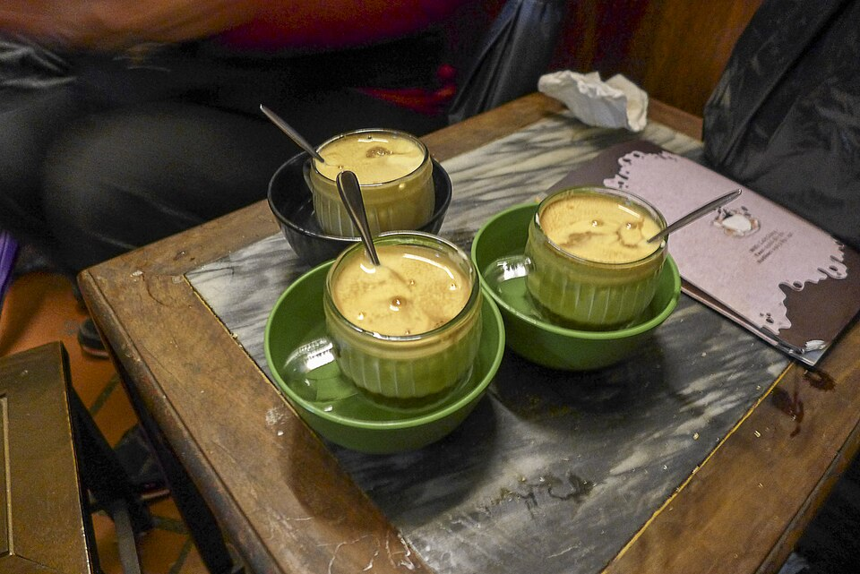

Circuit privé · Hanoi
Une journée à Hanoi
Découvrez Hanoi en une journée avec un guide francophone privé, entre lieux d’histoire, ruelles animées et saveurs locales. De la rue du Train au Temple de la Littérature, le parcours se poursuit vers Ba Đình et le Vieux Quartier avant une pause autour d’un café à l’œuf.
Avec Jo : votre guide francophone à Hanoi.

Votre programme
Le matin
À 08h30, votre guide vous retrouve à votre hôtel dans le Vieux Quartier. La balade commence à pied vers la rue du Train, à Phùng Hưng, où vous aurez peut-être la chance de voir passer le train.
À 09h30, prenez place dans un cyclo-pousse pour découvrir les rues animées de Hanoi. La visite se poursuit à 10h30 au Temple de la Littérature, un lieu consacré au savoir et à l’éducation.
À 12h30, une pause dans un restaurant local permet de découvrir les saveurs hanoïennes, comme le bún chả ou le phở.
L’après-midi
À 13h30, direction la place Ba Đình et le complexe du mausolée de Hô Chi Minh. À 15h00, vous retrouvez les ruelles du Vieux Quartier et ses 36 corporations, jusqu’à la cathédrale Saint-Joseph.
À 16h00, la journée se termine autour d’un café à l’œuf, une spécialité onctueuse de Hanoi.

Fin de la visite vers 16h00–16h30.
Inclus
- Un guide francophone privé
- Une dégustation de street food
- Une boisson
Non inclus
- Les billets d’entrée
- Les trajets en Grab ou en taxi
- La balade en cyclo-pousse
- Le spectacle de marionnettes sur l’eau
- Le déjeuner au restaurant
- Les éventuels frais de paiement
Conseils pratiques pour votre journée
- Rendez-vous
- À votre hôtel dans le Vieux Quartier à 08h30. L’heure est confirmée la veille.
- Tenue
- Épaules et genoux couverts dans les lieux religieux.
- À emporter
- Chapeau, lunettes, crème solaire et eau.
- Sur place
- Prévoyez des dongs vietnamiens pour vos dépenses.
- Applications utiles
- Grab, Google Maps et Google Translate.
- Pourboire
- Facultatif, à votre discrétion.
Conditions de réservation
Confirmation
Un acompte confirme votre réservation. Le solde est réglé le jour de la visite.
Annulation et remboursement
Pour une annulation plus de 30 jours avant la visite, l’acompte est intégralement remboursé. Pour une annulation à 30 jours ou moins, l’acompte n’est pas remboursable.
Météo
L’itinéraire peut être adapté en cas de conditions météorologiques exceptionnelles.